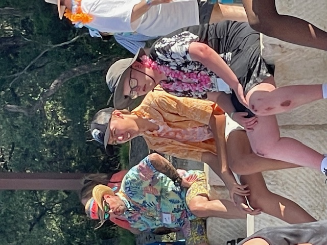

Antioch Community Church
Leading college life groups at my local church has been a great experience for me. It has helped me develop leadership skills and give back to my community. It has also taught me how to build relationships with people from different backgrounds. I have grown very close with many of the men in my lifegroup and I have been able to mentor them on a personal level. Each week I devote time serving the Lord by faciliating a time of worship and prayer for those in attendance at lifegroup and meeting with people outside of the lifegroup to help them get to know the Lord and grow in their faith.
People With Smiles Camp
During the summer of 2021 and 2022 I served as a volunteer at People With Smiles Camp. This camp is designed for people with Prader Willi Syndrome, a rare genetic disorder that causes a number of physical, mental, and behavioral issues. Their biggest challenge is that their body doesn't alert them when they are full, so they need 24/7 supervision to make sure they don't overeat. My role as a one on one counselor was to assist them through some fun outdoor activities and supervise them during their meals and snacks.
Serving at Food Banks
I haven’t served at a food bank since early high school, but I deeply value the experience and hope to begin volunteering again in the future. Food banks provide essential support to those in need, and being part of that mission is incredibly fulfilling. Volunteering is not just an act of giving back; it’s a meaningful way to connect with my community and demonstrate compassion for those facing challenges. Volunteering at a food bank is a great way I can give back to my community, ensuring others have access to the resources they need. I look forward to resuming this meaningful work and continuing to serve with gratitude and love for the people who make our community strong.